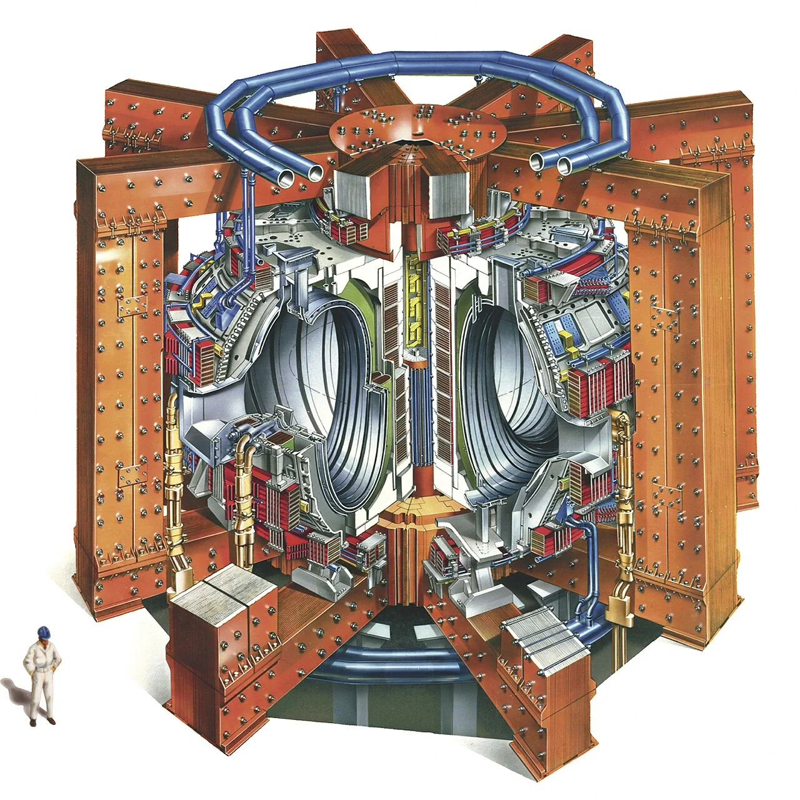
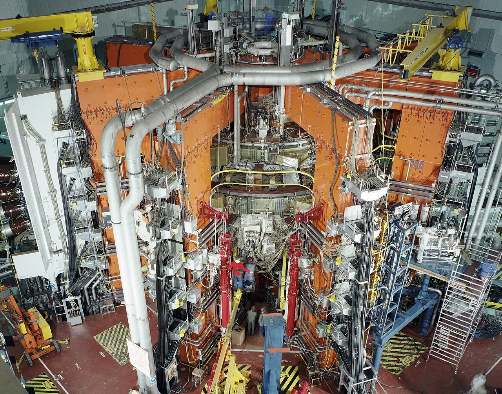
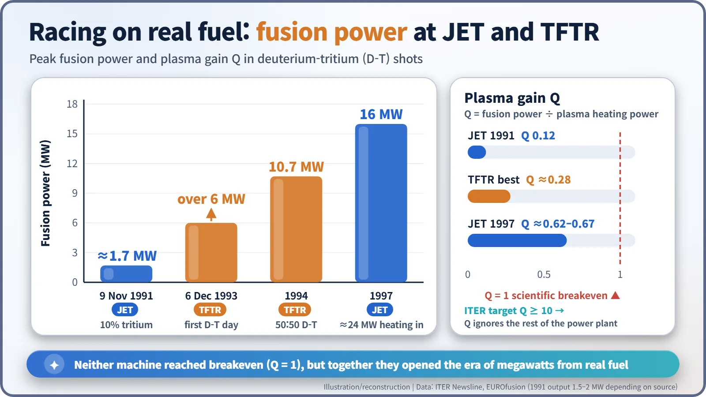
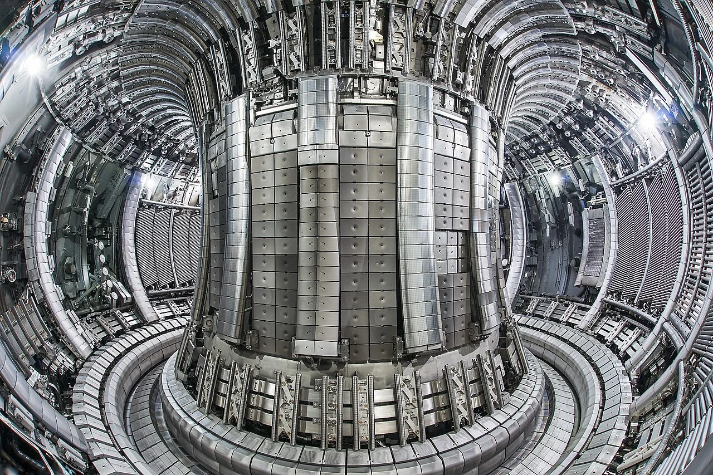
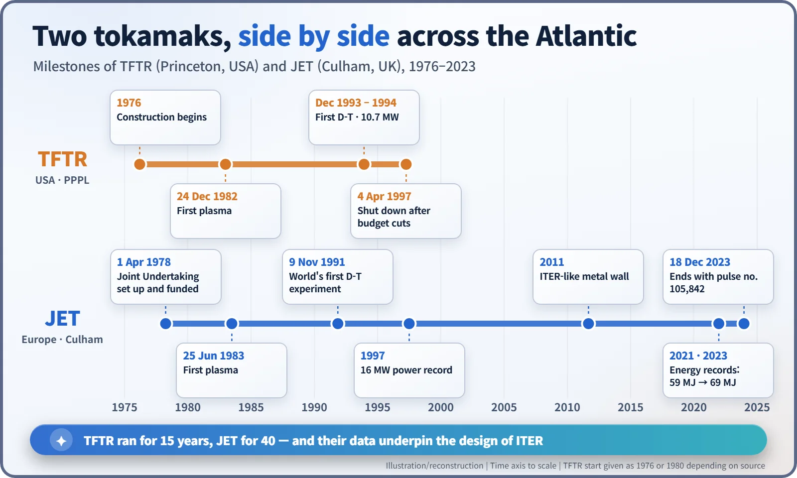

Nuclear History · 221
The Day Pulse 105,842 Went Out — JET and TFTR, the Tokamaks That Burned Real Fusion Fuel
Two giant tokamaks on either side of the Atlantic, the first deuterium-tritium shots, and the gap between plasma gain and a working power plant.
In the 1980s the United States and Europe each built a giant tokamak to answer one question: would real fusion fuel, a mix of deuterium and tritium, give out meaningful power? Princeton's TFTR and Europe's JET at Culham raced from about 1.7 MW in 1991 to 16 MW in 1997. Neither reached breakeven, but together they laid the groundwork for ITER.
The last pulse
On 18 December 2023, at Culham near Oxford, the Joint European Torus (JET) fired its last plasma. It was pulse number 105,842, and it closed some forty and a half years of operation. "This is the final milestone in JET's 40-year history," said Sir Ian Chapman, chief executive of the UK Atomic Energy Authority (UKAEA). [6]
To see why that machine mattered, we have to go back to the 1970s, and to a rival on the other side of the Atlantic.
Bigger doughnuts, courtesy of an oil crisis
In 1968–69 the Soviet tokamak, a doughnut-shaped magnetic trap, was shown to hold plasma at around ten million degrees. Fusion research swung behind the design, and the next question was obvious: if you put real fuel into one of these machines, would you get a meaningful amount of power out?
The oil embargo of the mid-1970s gave governments a reason to pay for the answer. Three large tokamaks were born: the Tokamak Fusion Test Reactor (TFTR) in the United States, JET in Europe and JT-60 in Japan, often called the "Big Three". [1]
At the Princeton Plasma Physics Laboratory (PPPL) in New Jersey, construction of TFTR began in 1976 (some sources give 1980). Europe's path was slower. JET was a joint project funded by many countries, and the choice of site was argued over for a long time before Culham was chosen at the end of 1977. The JET Joint Undertaking was set up under the European Atomic Energy Community (Euratom) on 1 April 1978. The design was led from 1973 by the French physicist Paul-Henri Rebut. [1] [8]

TFTR got off the line first. It made its first plasma on Christmas Eve, 24 December 1982, the first of the Big Three to operate. The laboratory's director at the time was Harold Furth (1930–2002). JET followed with its first plasma on 25 June 1983, and Queen Elizabeth II formally opened it on 9 April 1984. Its vacuum vessel was a doughnut about 6 metres across and 2.4 metres high. [1] [8]
Why "real fuel" was such a big step
The most practical fuel for fusion power is a mix of two heavy forms of hydrogen: deuterium (D) and tritium (T). When their nuclei fuse they produce helium and a neutron, releasing 17.6 MeV per reaction. The catch is that tritium is radioactive, with a half-life of about 12.3 years, and the fast neutrons from the reaction make the machine's own walls radioactive too. So most experiments used deuterium alone, and deuterium-tritium (D-T) runs were rationed. Think of it as a driving test: you can practise in the car park every day, but you only take it out on the motorway when you are properly licensed and ready.
1991: the first live round
JET went first. On 9 November 1991, in what it called the Preliminary Tritium Experiment, it used a fuel mix of only 10% tritium and fired just two nearly identical pulses. Peak fusion power was about 1.7 MW (sources range from 1.5 to 2 MW), for roughly two seconds, with a fusion gain of 0.12. The press release said it was "the first occasion in which the correct fusion fuels, deuterium and tritium, have been used". [2] [4]

TFTR raised the stakes. On 6 December 1993 its first D-T shot produced about 3 MW, and a second shot the same day produced more than 6 MW. In 1994, running on a 50:50 mix of deuterium and tritium, it set a world record of 10.7 MW. In 1995 it also reached a temperature of 510 million °C. JET answered in 1997 with 16 MW of fusion power, a power record that stood for a long time. [2] [7]

The trap in "almost breakeven"
For that 1997 record, JET's heating systems put about 24 MW into the plasma. The ratio of fusion power out to heating power in is called Q, the plasma gain. JET's Q was about 0.62–0.67 (sources differ), and TFTR's best was about 0.28. Q = 1 is "scientific breakeven". [2] [4] [7]
Here is where a common misunderstanding creeps in. A Q of 0.67 is often read as "the power plant nearly paid for itself". It did not. Q only counts the heat delivered to the plasma. It leaves out the electricity needed to run the heating systems and the magnets, and the losses in turning heat back into electricity. A real power plant needs a far higher Q, which is why the international ITER project aims for Q of 10 or more.
Two endings, one baton
The two machines ended very differently. In 1996 the US fusion budget was cut by 35%, and TFTR was shut down early, on 4 April 1997, after about fifteen years. Its dismantling was completed in September 2002. It never reached breakeven, its original goal, but an ITER retrospective says it "achieved all of the original project goals". [1] [7]
JET carried on for forty years. Between 2009 and 2011 its inner wall was rebuilt from carbon to beryllium and tungsten, the same materials planned for ITER, which made it a dress rehearsal for the bigger machine. Activated parts inside the vessel were swapped by remote-handling robot arms rather than by people. In its final D-T campaigns JET set fusion energy records of 59 MJ in 2021 and 69 MJ in 2023. Those are records for total energy in a single pulse, not for Q. [3] [5] [8]


From 2024 JET moved into decommissioning and repurposing, expected to run until about 2040. The data from its 105,842 pulses are built into ITER, now under construction in France. Fusion is not only a far-off dream: it rests on experiments that, back in the 1990s, already drew tens of megawatts from real fuel. The homework that remains is the hard part — getting out more than you put in. [6]